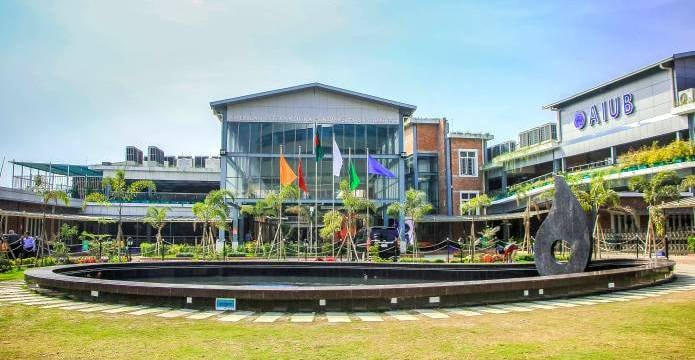
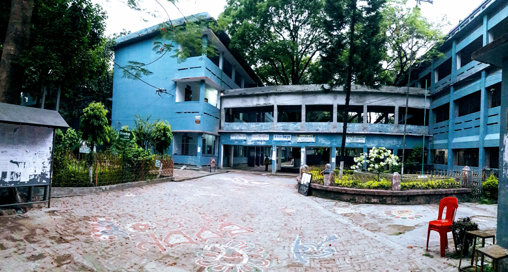
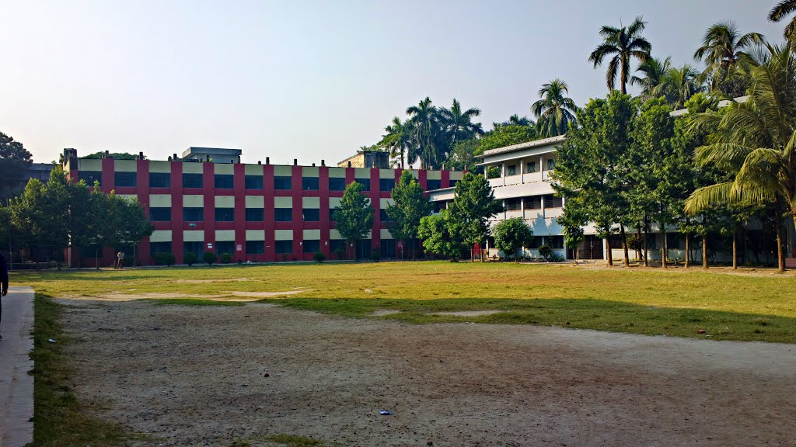

University Life
This is my versity American International University-Bangladesh (AIUB).I've studied there from 2014 to 2018. Lots of nice moments are there during this period.The main reason for going to university is to get an academic qualification, but personally, I think that the social side of things and developing as a person are equally important. The good thing about university life is that you are left to your own devices, unlike school, where you're told what to do and how to do it. It's important to socialise and meet new friends. lt takes some people longer than others. Still i miss my versity life.
College Life
This is my college Govt.City College Rajshahi & it's the one of the best college in our rajshahi division.There're lots of things happended in my college life.Attending college was a great experience to me because it shaped me to who i am today.College life helps me discover myself & learn newer things every day, these're some of things i can't accomplish without going to college.
School Life
This is my school Rajshahi Collegiate School & it's one of the best & oldest school in our country.Apart from versity & college life i think School life is the best life.I often get nostologic whenever i remember the memories of my school life.I think People are learning from his childhood in the school, and also a school built the character of the man. It is the formative period for everyone. Every student should try to make his better life and best use of school life because it never comes again after the school session.